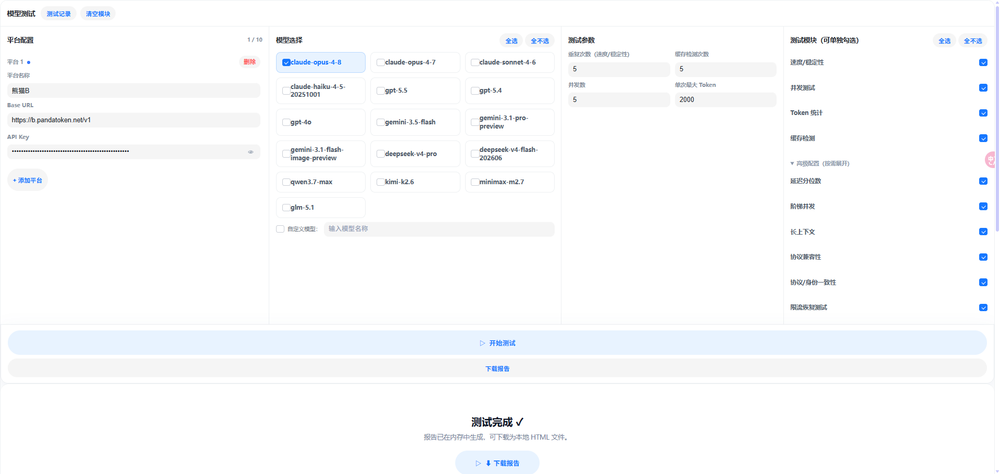
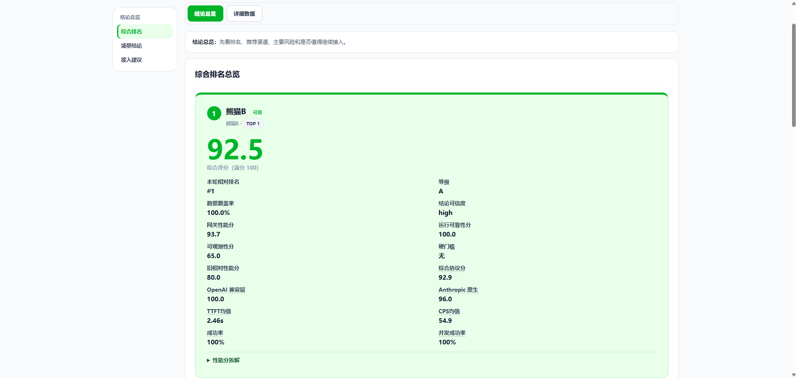
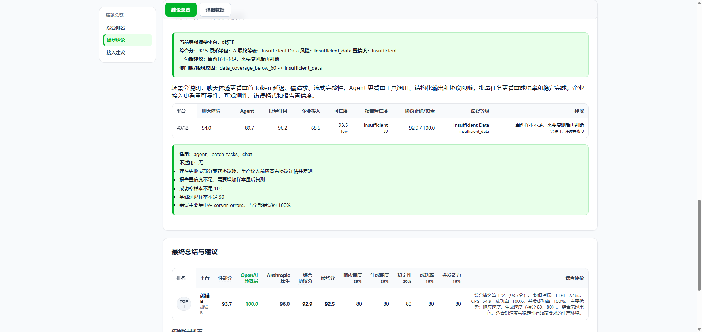
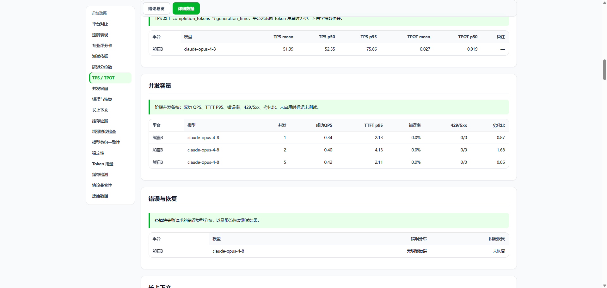
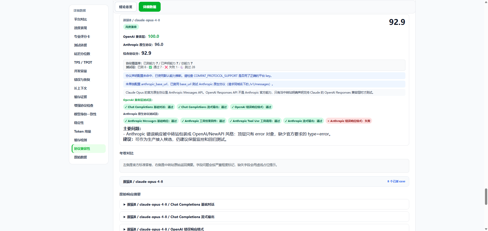
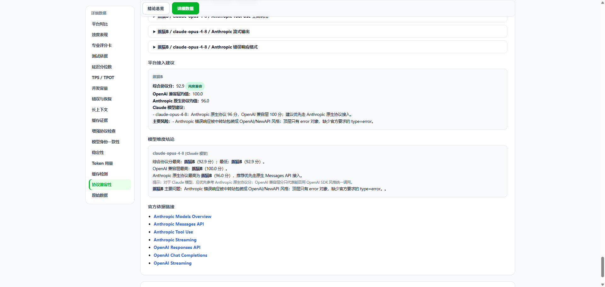

综合评分报告
把渠道表现汇总为评分、等级、排名和关键指标，让不同平台可以横向比较。
面向 AI 模型 API 聚合平台，设计并落地一套真实测试工具，把模型 API 调用质量、协议兼容性、异常归因和接入建议转化为可比较的测试报告。
项目二不是单纯原型展示，而是一套真实测试工具 + 测试报告 + 接入决策系统。
以下截图来自大模型渠道测试工具的真实测试流程，展示了从平台配置、模型选择、测试参数设置，到综合评分、详细指标、协议兼容性检查和接入建议输出的完整链路。截图内容已按作品集展示场景做脱敏处理。

支持平台配置、Base URL、API Key、模型选择、测试参数和测试模块勾选，覆盖速度 / 稳定性、并发测试、Token 统计和缓存检测等模块。

自动输出综合评分、等级、排名、结论可信度、运行可靠性分、协议分、TTFT、CPS 和成功率等核心指标。

将测试结果按聊天体验、Agent、批量任务、企业接入等场景进行归纳，并输出适用场景、不适用场景和复测建议。

展示 TPS / TPOT、并发容量、错误与恢复等细项数据，用于判断渠道在高并发和异常情况下的稳定性。

检查 OpenAI / Anthropic 协议兼容性、错误响应格式、流式输出和工具调用能力，辅助判断接入改造成本。

基于综合协议分、兼容层分值和主要风险点，输出平台接入建议、模型维度结论和后续处理动作。
该工具的核心价值不只是调用模型 API，而是把测试过程沉淀为标准化评测流程。通过配置化测试、指标采集、评分计算、异常归因和接入建议输出，帮助团队在接入前识别渠道风险，减少上线后的协议不兼容、限流异常、Token 统计缺失和模型身份不一致等问题。
报告页重点承接真实测试数据，把技术指标转化为综合评分、场景结论、协议风险和接入建议，方便团队做接入决策。
把渠道表现汇总为评分、等级、排名和关键指标，让不同平台可以横向比较。
对 OpenAI / Anthropic 协议、流式输出、工具调用和错误响应格式进行逐项检查。
基于风险点给出接入建议、复测建议和适用场景判断，让报告结果能进入决策流程。
PandaToken 是 AI 模型 API 聚合平台，需要对不同平台和模型渠道进行质量评估。原有测试方式依赖人工请求和单点记录，难以横向对比，也无法快速判断渠道是否适合接入。
指标不是为了“跑分”，而是为了把技术表现转译成产品接入判断。
| 指标 | 含义 | 产品判断价值 |
|---|---|---|
| TTFT | 首字返回时间 | 判断用户等待体感 |
| CPS | 每秒生成字符数 | 判断模型输出速度 |
| 成功率 | 请求成功占比 | 判断渠道稳定性 |
| 错误率 | 异常请求占比 | 判断接入风险 |
| 并发表现 | 多请求下的稳定性 | 判断高峰场景可用性 |
| 协议兼容性 | 是否符合 OpenAI API 格式 | 判断接入改造成本 |
| 限流恢复 | 限流后的恢复能力 | 判断持续调用风险 |
| Token 统计 | 输入输出 Token 是否正常返回 | 判断计费和成本可观测性 |
| 模型身份一致性 | 返回模型是否与请求一致 | 判断渠道透明度 |
模型评测不是单纯跑接口，而是把技术指标转化成产品接入决策。这个项目让我更重视指标定义、异常归因和报告表达之间的一致性。